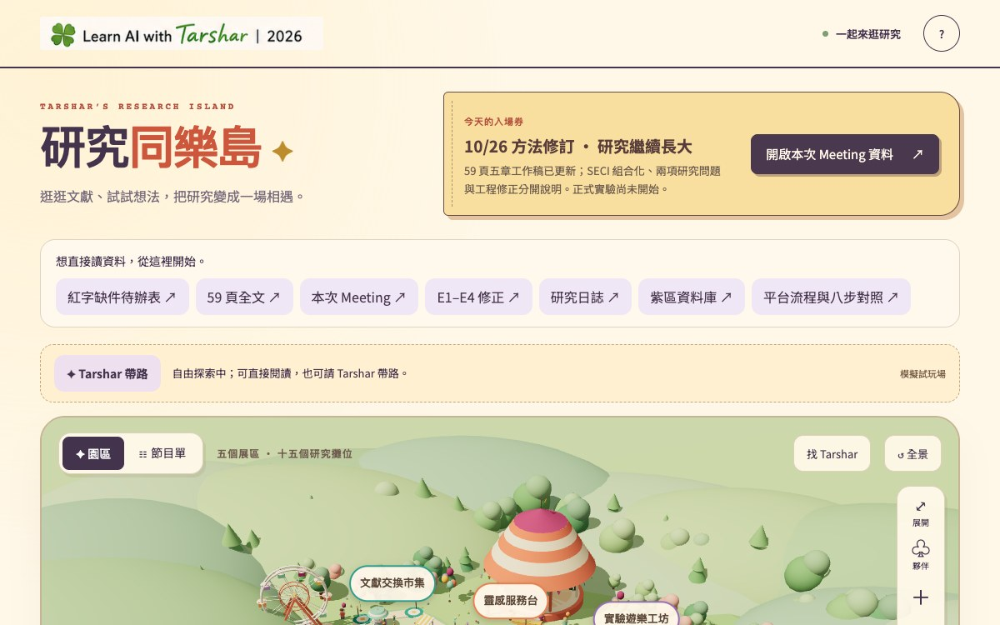
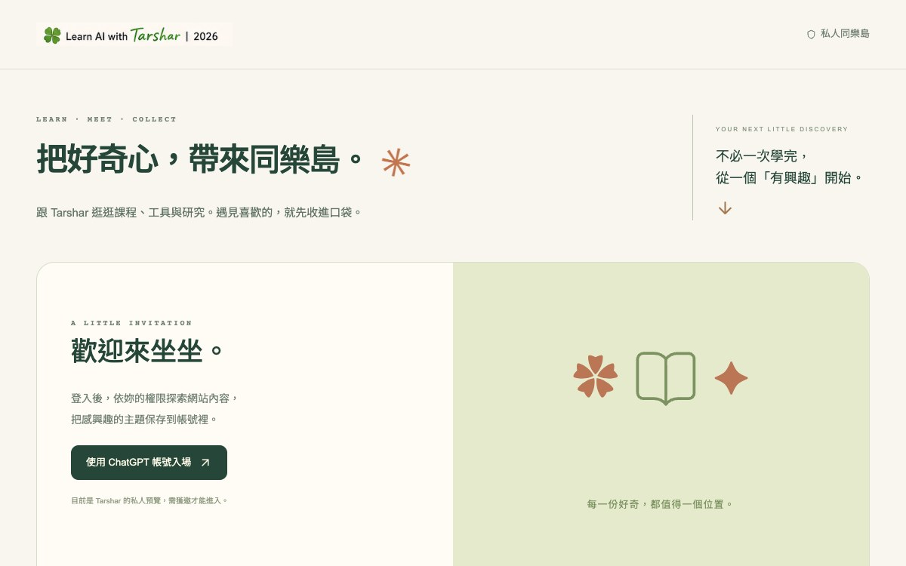

- 5 區 15 攤的研究快照
- 可以自由逛，也可請 Tarshar 帶路
- 來源、狀態與新舊版本不丟失
🎯 先說結論
資料不是沒整理，而是缺少一個讓人願意回來、知道下一步的入口。
我的論文資料一直都在：文獻、實驗平台、章節工作稿、Meeting 材料、進度紀錄。問題是，手機打開時，我常常不知道現在該去哪裡，也不確定哪一份才是目前版本。
第一座島解決論文現場，第二座島解決整個網站。這兩座島最後教我的，不只是怎麼整理資料，而是怎麼和 AI 一起做完一件真正會使用的作品。
🗺️ 兩座島，解決兩種「找不到」


- 6 個展區、299 個唯一入口
- 可搜尋、收藏、再回來看
- 原始內容留在原頁，不做第二份正本
38課程
160直播課程筆記
25工具
6生活
46研究
24文章
🛤️ 不是「一句話生出來」，而是一路退修出來
01 保留真實基礎先盤點研究資料、Logo、公仔、路網和全站入口。
02 本人持續退修不要流行六角模板；公仔不像我；髮型太複雜；名字也不對。
03 每次都要回讀功能、手機、權限、下載檔、名稱與正式網址逐層驗收。
我曾經以為 AI 會寫程式就夠了。但這次我看得很清楚：功能完成，不等於作品完成。如果世界觀不像我、公仔不像我，或者我看到名字就覺得不對，那它再完整也不會被我使用。
✍️ 這次最直接的一句話
所有相關名字都改回「研究同樂島」、「知識同樂島」，不要叫什麼同樂會。
這看起來只是改一個字，實際上得檢查網站標題、頁尾、主選單、Word、PDF、README、交班、專案資料夾與部署中繼資料。只改首頁，錯的名字還是會從別的入口長回來。
但也不是所有東西都硬改。既有網址、island 路徑與程式內部 ID 刻意保留，因為這些是書籤和部署的地基。
我學到的不是「全部改掉」，而是把使用者看得到的品牌名稱，和不應隨意變動的技術識別分開處理。
🌱 我會帶走的四個方法
📘 我把整段過程做成了手冊
這份 AI 協作日誌手冊不只放成品圖，還保留了「我怎麼說」、「AI 第一次怎麼做」、「為什麼被我退回」、「最後怎麼驗收」。因為對我來說，真正可以重用的往往不是最後那張美圖，而是中間那些判斷。
研究同樂島可公開瀏覽；知識同樂島現在仍維持 Tarshar 擁有者私人權限。
🍀 關於我
Tarshar，淡江 EMBA 資管研究生，AI 課程講師。在經營「🍀Learn AI with Tarshar」，記錄一個非工程師怎麼把 AI 變成日常隊友，也把真實的退修、判斷與步驟留下來。